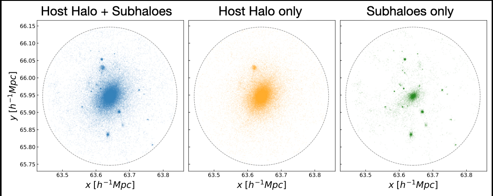
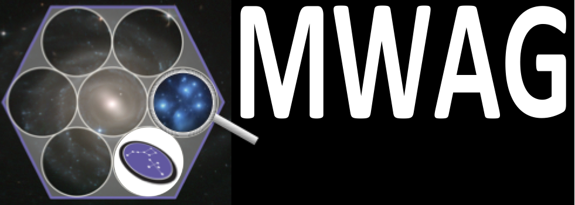

About Me

Education:
-
BS in Physics from Texas Tech University
-
MS in Physics from the University of Pittsburgh
-
PhD in Physics from the University of Pittsburgh ETA 2021
Research Interests:
I’m interested in studying the evolution of galaxies and the dark matter haloes in which they reside.
Many aspects of dark matter haloes are still not well understood. In particular through the use of N-body
simulations I’ve studied what it means to have a “Milky Way-like” dark matter halo, how dark matter halo
properties correlate with subhalo abundances, and what dark matter halo density profiles look like without
their subhaloes. Because we reside within the Milky Way we have a much more limited understanding of its
history and evolution. I have spent time with the SDSS-IV Milky Way as a galaxy group on determining photometric
properties of the Milky Way using machine learning in order to better determine the Milky Way’s color and
luminosity which provide insight into its evolution.
Publications:
List of both first author and co-author papers.
ORCID
Research
Predictably Missing Satellites: Subhalo Abundances in Milky Way-like Dark Matter Haloes
In this project I investigated the 'missing satellites problem' in the context of Milky Way-like dark matter heales,
i.e. haloes that are similar to the Milky Way in properties other than mass such as concentration, spin, shape, and
merger history. We find that a halo most like the Milky Way has as many as 30-50% fewer subhaloes than another halo of the
same mass. Models that are tuned to explain the missing satellites problem are thus likely over-correcting for the
supression of satellite formation.
Presentations:
-
Talk presented at the 2016 Great Lakes Galaxies and Cosmology Workshop
-
Flash talk and poster presented at DM 2018 conference
-
Flash talk and poster presented at Durham 2019 conference
-
Talk presented at the 2019 Great Lakes Galaxies and Cosmology Workshop
Published in Monthly Notices of the Royal Astronomical Society April 2019
One of our haloes with different selections. Virial radius drawn for reference.
Towards a More Universal Density Profile: Halo Mass Distributions Without Subhaloes
Comparing dark matter halo simulations and observations necessitates comparisons of the same thing. However,
while dark matter halo simulations include the set of the host and subhaloes, observations that model dark matter
haloes typically attribute another mass distribution to the substructure in addition to the observed ensemble. Thus there
is a double-counting problem. I investigate dark matter halo mass distributions with and without the
presence of subhaloes, finding that not only are these two substaintially differet, but that both mass distributions
are well described by a generalised Einasto profile.
Presentations:
-
Flash talk and poster presented at Durham 2019 conference
-
Talk presented at the 2019 Great Lakes Galaxies and Cosmology Workshop

The Milky Way As A Galaxy Working Group
As a member of this SDSS-IV working group I've been involved with a number of aspects in regards to the study of the
Milky Way. The focus of my work as been on the selection of Milky Way Analogs (see me GitHub link) and using machine
learning to predict various Milky Way properties as they would be if we were an external observer. An upcoming goal is
the creation of a SED for the Milky Way.
Data and Tools
Milky Way Analog Selection:
Link to Github repository for selecting Milky Way analogs
This code is designed for efficient selection and analysis of Milky Way analogs. Analogs
are selected by random draws from the fiducial Milky Way PDF in the parameter space of interest.
More than three parameters are discouraged due to small numbers of analogs. For each set of random
draws the nearest neighbors are found in a binary tree. Then the sample's photometric properties,
derivatives of the photometric properties, and the errors + Eddington bias are calculated.
Useful Catalogs:
Contact
Email:
cef41@pitt.edu Send mail.
fielder.catherine@gmail.com Send mail.
Address:
Allen 300 No. 12
3941 O'Hara St,
Pittsburgh, PA 15213
USA